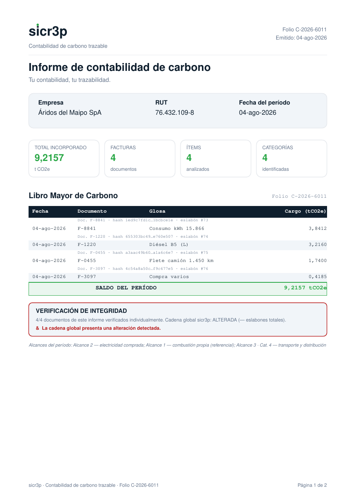
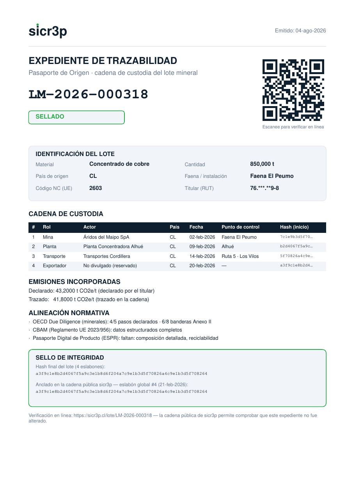
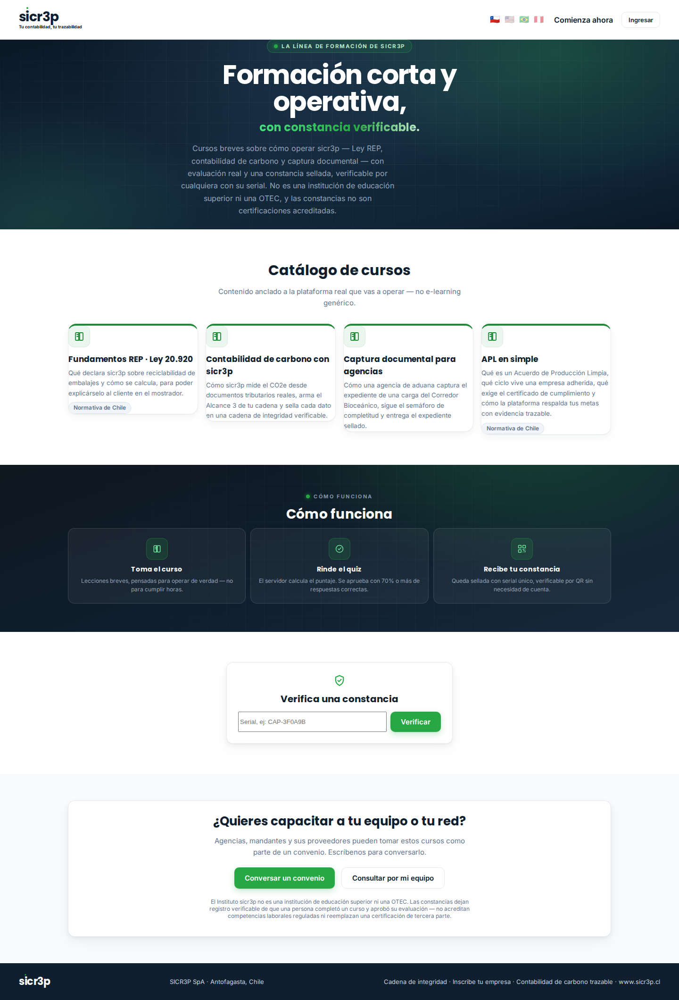
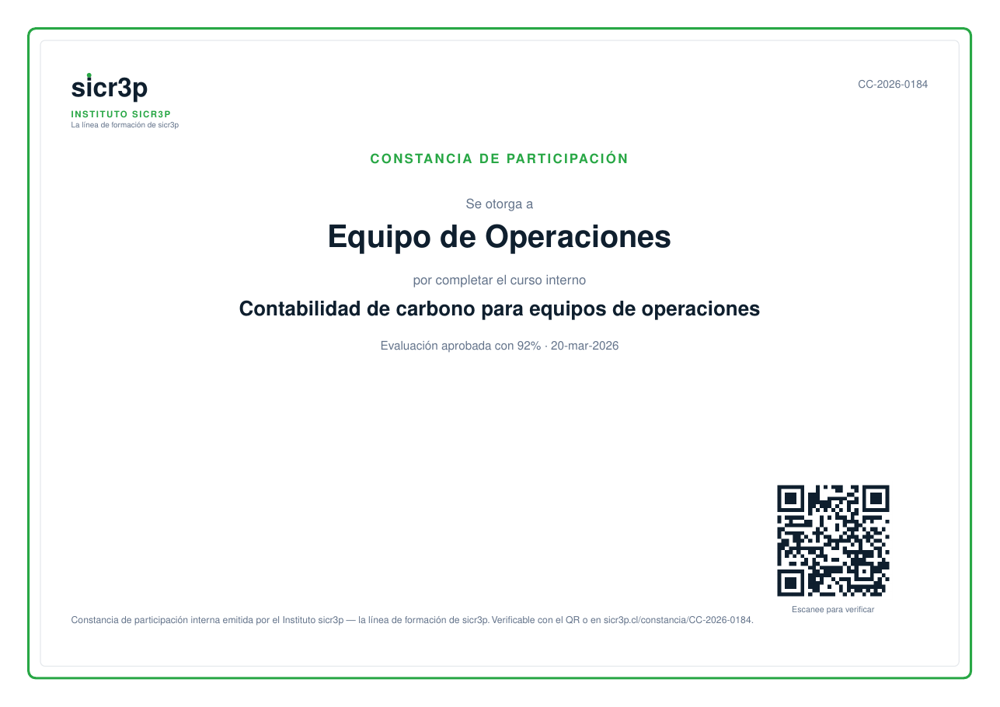
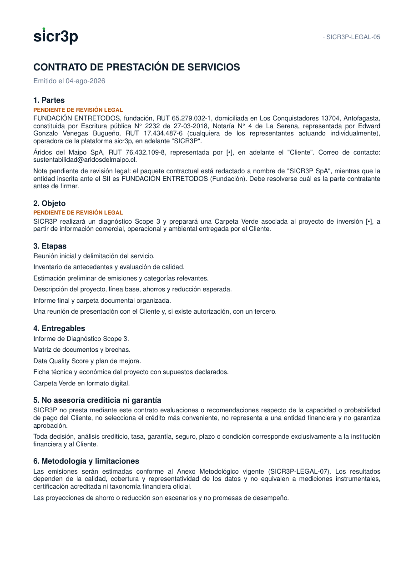

sicr3p
Tu contabilidad,
tu trazabilidad.
El proyecto completo, contado como un libro: por qué se hizo, las leyes que lo empujan, el fundamento teórico y técnico de cada módulo, la arquitectura que lo sostiene, el contrato con que se ofrece, el negocio que lo financia — con imágenes reales del sistema — y una opinión honesta de quien lo construyó.
La visión
Por qué existe sicr3p, y por qué nace en Antofagasta y no en Santiago.
Toda empresa chilena ya produce, sin saberlo, su contabilidad ambiental: está escondida en sus facturas. Cada compra de electricidad, combustible, transporte o materiales es un dato de emisiones esperando ser calculado. La visión de sicr3p es simple de enunciar: convertir los documentos que la empresa ya tiene en la evidencia ambiental que el mundo le empieza a exigir — sin encuestas, sin promedios de industria, sin consultorías de meses.
La segunda mitad de la visión es menos obvia y más importante: que el dato sea verificable por cualquiera. Un informe que solo puede validar quien lo emitió vale poco. Por eso todo lo que sicr3p produce — informes, pasaportes, declaraciones REP, compensaciones — queda sellado en una cadena de hash pública: alterar un registro pasado es matemáticamente detectable por cualquier persona, sin pedir permiso y sin confiar en nadie, incluidos nosotros.
Por qué Antofagasta
Porque aquí convergen las tres cadenas que este proyecto traza: la minería que exporta al mundo y responde a compradores europeos; el comercio urbano que enfrenta la Ley REP sin equipos técnicos; y el Corredor Bioceánico que unirá el Atlántico brasileño con los puertos de esta región, moviendo carga a través de cuatro países. sicr3p no mira estos tres mundos desde afuera: opera en el territorio donde se cruzan.
Las tres olas regulatorias
La demanda no la crea sicr3p: la crea la regulación. Tres frentes a la vez.
| Ola | Qué exige | A quién golpea |
|---|---|---|
| Ley REP 20.920 (Chile) | Declarar envases y embalajes, con metas de reciclaje crecientes por decreto (DS 12/2020). | Todo productor y comercializador de productos prioritarios — incluido el comercio urbano. |
| Mandantes corporativos | Las grandes empresas piden a sus proveedores datos de emisiones y REP para sus propios reportes (NCG 461 de la CMF, CDP, IFRS S2). | Miles de pymes proveedoras que hoy responden con planillas sin respaldo verificable. |
| Acceso a mercados UE | CBAM (emisiones incorporadas por tonelada, Reglamento UE 2023/956), Pasaporte Digital de Producto (ESPR), debida diligencia OCDE en minerales. | Exportadores y toda su cadena aguas arriba. |
El punto clave: las tres olas piden lo mismo con nombres distintos — datos ambientales trazables hasta su origen documental. Quien resuelve la trazabilidad una vez, responde a las tres. Esa es la apuesta estructural de sicr3p: un solo registro sellado que sirve a la declaración REP, al reporte del mandante y al expediente de exportación.
El costo de la alternativa
La respuesta tradicional es la consultoría caso a caso: millones de pesos por empresa, sin evidencia verificable, imposible de escalar a una pyme. La automatización desde el documento real reduce ese costo a una fracción y deja algo que la consultoría no deja: un registro público que no depende de la palabra de quien lo emitió.
El motor: del documento al dato
Cinco maneras de leer una factura, un solo resultado: t CO2e con fuente citada.
El corazón técnico de sicr3p es su motor de cálculo propio. La empresa sube su documento y el motor lo lee por la vía que corresponda:
| Vía | Documento | Cómo se procesa |
|---|---|---|
| 1 | XML de DTE (SII) | Lectura directa del documento tributario electrónico: RUT emisor y receptor validados por módulo 11, ítems, montos, folio. |
| 2 | PDF con texto | Extracción de la capa de texto y reconstrucción de los ítems. |
| 3 | PDF escaneado | Rasterizado y reconocimiento óptico de caracteres (OCR) en español. |
| 4 | Fotos JPG/PNG | OCR directo sobre la imagen — la foto que el comerciante toma con su teléfono. |
| 5 | Fotos HEIC (iPhone) | Conversión de formato y OCR. |
Lo que ninguna vía puede resolver no se inventa: cae a una cola de revisión humana, donde un operador corrige los datos, el motor calcula y el documento recién entonces se sella en la cadena. Ningún dato dudoso entra al registro con apariencia de certeza.
Independencia y factores citados
El motor clasifica cada ítem en categorías con su factor de emisión y su fuente
metodológica citada (HuellaChile del Ministerio del Medio Ambiente, IPCC, DEFRA,
GLEC), distinguiendo entre factores en estado referencial y validados oficialmente. La
plataforma nació usando un proveedor externo de cálculo; hoy el motor propio cubre todos los
formatos y existe un interruptor de corte (MOTOR_EXTERNO=off) para el retiro
definitivo del tercero. La metodología completa, con los 16 factores y sus fuentes, está
publicada en la Guía Metodológica sicr3p (espejo de la guía sectorial del
cobre), disponible en el sitio.

La cadena pública de integridad
El reemplazo honesto de la blockchain: verificable por todos, sin costo de red.
Cada documento procesado se resume en un hash SHA-256 y se encadena al anterior: el eslabón N contiene el hash del eslabón N-1, por lo que alterar cualquier registro pasado rompe la cadena desde ese punto en adelante, de forma detectable por cualquiera que la recalcule. La cadena es de solo-agregado: nada se edita, nada se borra.
Qué garantiza y qué no — dicho en la propia página pública
- Garantiza: integridad interna del registro. Nadie — incluido sicr3p — puede modificar un dato sellado sin que la verificación falle públicamente.
- No es: una red blockchain pública ni una verificación de tercera parte acreditada. La página pública lo dice con todas sus letras.
La vista pública está anonimizada por diseño: muestra eslabones, fechas, hashes cortos y toneladas — jamás RUT, razones sociales, folios ni archivos. Y desde la incorporación de los pasaportes de origen, la cadena también recibe anclajes de lote: cuando un lote de trazabilidad se cierra, su hash final queda sellado como un eslabón más de la cadena global, heredando su auditabilidad.
Terreno: la red urbana
La atención en terreno donde el comercio de ciudad resuelve REP y carbono en una visita.
La atención en terreno es la capa de distribución física de sicr3p para
tramitación verde de documentos comerciales — y cada superficie pública aclara que no realiza
trámites ante ningún servicio nacional de aduanas ni constituye verificación acreditada.
Un operador humano, logueado en /panel-verde, atiende al comercio que llega con
sus facturas y le entrega:
- Su cálculo de emisiones (t CO2e) desde sus documentos reales.
- Su declaración REP de embalajes: componentes, pesos y porcentaje de reciclabilidad calculado siempre en el servidor, clasificado en tres niveles.
- Su etiqueta QR de verificación pública y su sello digital para el sitio web.
- La opción — siempre voluntaria — de compensar, con tarifa referencial visible (ancla: impuesto verde chileno, US$5/t CO2e) y equivalente en dólares con el dólar observado del Banco Central actualizado automáticamente.
- Si lo desea, su Pasaporte de Producto (capítulo 6).
Sin terminal físico
Un kiosco autoservicio con login de dispositivo (serial + clave) llegó a construirse y a operar, pero se descontinuó: el canal de terreno funciona 100% desde el panel, con la cuenta del operador. El pago real por pasarela (VirtualPos) sigue investigado y diseñado para cuando se retome; hoy el cobro opera en modalidad simulada — y el libro lo dice porque la honestidad es política editorial.
Los tres pasaportes
Una sola maquinaria de trazabilidad, tres destinos: carga, producto y mineral.
El módulo de Pasaporte de Origen (inspirado en el concepto internacional de pasaportes digitales de cadena de suministro, estilo Minespider) crea lotes cuya cadena de custodia se arma eslabón por eslabón, cada uno sellado con hash y sin posibilidad de edición posterior. Hay tres tipos, cada uno con su catálogo y sus roles:
| Tipo | Para qué | Roles de la cadena |
|---|---|---|
| Documental | Corredor Bioceánico: la carga y sus documentos por tramos. | origen → transporte → depósito → frontera → puerto → destino |
| Producto | Comercios de ciudad (terreno sicr3p): cualquier rubro — alimentos, textil, embalajes, manufactura. Sin nada de minería. | productor → proveedor → transporte → comercio → punto sicr3p → comprador |
| Mineral | Cadena minera de exportación. | mina → planta → refinería → comerciante → exportador → comprador |
Las cuatro ideas que lo diferencian
- Eslabones anclados a documentos tributarios reales: un eslabón puede vincularse a una factura DTE del SII (o a un documento MIC/DTA del corredor); si el RUT del actor no calza con el documento, el sistema lo advierte. Evidencia fiscal, no autodeclaración.
- Divulgación selectiva: cada actor elige si su eslabón es público, solo-cadena o privado. Los hashes son públicos siempre (la integridad se verifica sin permiso); el contenido comercial, solo si su dueño lo divulga. Un secreto aleatorio dentro del hash impide adivinar el contenido oculto por fuerza bruta.
- Balance de masas: si la cantidad "se pierde" a lo largo de la cadena más allá de la tolerancia, el pasaporte lo advierte públicamente.
- Declarado versus trazado: las emisiones incorporadas que el titular declara se contrastan contra la suma de los eslabones; si divergen, se advierte.
La alineación normativa es honesta por construcción: el checklist de debida diligencia OCDE (5 pasos + Anexo II) aparece solo en pasaportes minerales; los datos CBAM (código NC, emisiones por tonelada, método) y el formato de Pasaporte Digital de Producto (ESPR) aplican a los tres tipos — y la plataforma dice sola cuándo un material no está en el Anexo I vigente del CBAM.

La Tarjeta de Viaje y el expediente sellado
La credencial viaja con la carga: QR en el teléfono, ruta sin GPS, papel que se autovalida.
Nadie puede obligar a la carga a pasar por puntos de control fijos. sicr3p invierte el modelo: al despachar un lote se emite una Tarjeta de Viaje — una credencial virtual con QR (PDF tamaño tarjeta, costo cero por unidad) que se envía al transportista por mensajería o se imprime. La página de la credencial muestra su propio QR: el teléfono del portador ES la tarjeta.
- Cualquiera que escanee el QR ve el pasaporte público del lote. Ninguna lectura anónima queda registrada — decisión deliberada de diseño.
- El portador, con la clave que recibió junto a la credencial, registra pasos: báscula, paso fronterizo, puerto. Cada paso entra sellado a la cadena del lote con fecha del servidor y punto de control.
- La ruta es la secuencia de pasos: lugares conocidos + tiempos sellados con hash. Sin GPS, sin hardware, sin costo por unidad.
El cierre: papel y registro digital validándose mutuamente
Al llegar a destino, el lote se cierra: su hash final se ancla en la cadena pública global y se genera el Expediente de Trazabilidad — un PDF sellado con la cadena completa, las advertencias de balance, la alineación normativa y el hash impreso. Se archiva junto a la credencial física: cualquiera puede escanear el QR del expediente años después y comprobar que el papel dice la verdad.
El Corredor Bioceánico
Cuatro países, cuatro metodologías, un pasaporte documental.
El corredor de Capricornio — Brasil, Paraguay, Argentina, Chile — moverá carga que cruza hasta cuatro jurisdicciones con reglas de cálculo distintas. sicr3p lo modela desde el origen del proyecto: metodologías por país (Chile activa con base HuellaChile/ISO 14064-1; Argentina, Paraguay y Brasil preparadas en borrador para activarse con contrapartes locales), documentos de tránsito por tramo (manifiestos, MIC/DTA) y ahora el pasaporte documental del capítulo 6, cuya cadena de custodia registra origen, depósitos, fronteras y puertos con la Tarjeta de Viaje del capítulo 7.
El resultado buscado: que una carga que sale de un puerto chileno hacia Brasil (o viceversa) llegue con un expediente verificable de su ruta y sus emisiones de transporte por tramo — algo que hoy ningún actor del corredor ofrece de forma pública y verificable.
Mandantes y el cruce por RUT
El efecto red: cada documento enriquece un grafo que conecta compradores y vendedores.

Cada factura procesada lleva el RUT del emisor y del receptor, validados matemáticamente. Con miles de documentos, eso deja de ser un archivo y se convierte en un grafo de la economía real: quién le vende a quién, con qué emisiones asociadas.
Lo que ya funciona sobre ese grafo
| Capacidad | Qué hace |
|---|---|
| API de mandantes | La gran empresa consulta con su clave los datos de sus proveedores (solo los que le venden a ella), con lista blanca opcional por RUT y webhooks que le avisan de cada sesión nueva. |
| Búsqueda con cruces | Un RUT visto en sus tres roles: como cliente, como proveedor de otros, como comprador de otros. |
| Cadena de valor | Aguas arriba y aguas abajo de cualquier RUT: proveedores y compradores con sus t CO2e. |
| Valorización FIFO/PMP | Inventario valorizado en pesos y en CO2e desde los ítems del DTE — el costo de carbono del stock. |
| Capital Natural | Balance de activos naturales con valorización por fuente citada y su Estado en PDF. |
| Informes defendibles | Consolidado, mensual, etiqueta QR por factura, sello SVG vivo para el sitio del cliente, libro mayor de carbono. |
Este grafo es la barrera competitiva silenciosa del proyecto: cada mandante que entra trae a sus proveedores, y cada proveedor procesado hace más valiosa la consulta del mandante. La distribución puede copiarse; el grafo acumulado, no.
Arquitectura y seguridad
Aburrida a propósito: tecnología probada, reglas duras, y una red de seguridad que se ejecuta sola.
El stack
Node.js/Express y PostgreSQL en el backend; React/Vite en el frontend; nginx y pm2 en un VPS de bajo costo. Sin microservicios, sin Kubernetes, sin dependencias exóticas: la complejidad se gasta donde aporta (el motor, la cadena, los pasaportes), no en infraestructura de moda.
Las reglas duras (invariantes del código)
- El servidor manda: montos, porcentajes, niveles y hashes se calculan siempre en el servidor. Jamás se confía en un número que venga del navegador.
- Solo-agregado: lo sellado no se edita ni se borra; los errores se corrigen con registros nuevos que lo declaran.
- Identidades verificadas: RUT por módulo 11; dispositivos y tarjetas con clave propia revocable; mensajes de error que no filtran existencia de cuentas.
- Privacidad por defecto: vistas públicas anonimizadas, RUT enmascarados, divulgación selectiva, borradores legales jamás expuestos.
La red de seguridad
Más de 220 pruebas automatizadas corren antes de cada despliegue — en el propio servidor de producción (CI propio, sin depender de servicios externos). Después de cada despliegue, una prueba de humo de extremo a extremo golpea la producción real; si falla, el sistema revierte solo a la versión anterior y deja un diagnóstico escrito. El operador humano se entera del problema con la plataforma ya restaurada.
Rendimiento reciente: la aplicación pública baja dividida en módulos — quien escanea un QR descarga un tercio menos que antes, y el panel de administración solo lo descargan los operadores. Todo el sitio opera en español, inglés y portugués.
Negocio y hoja de ruta
Cuatro líneas de ingreso sobre un costo marginal cercano a cero — y lo que falta, dicho sin maquillaje.
| Línea | Mecánica | Estado |
|---|---|---|
| Suscripción SaaS | Plan mensual por empresa según volumen. | Pre-lanzamiento (códigos de cliente fundador) |
| Tramitación en terreno | Tarifa por trámite + compensación voluntaria. | Operativa en modalidad simulada |
| Pasaportes de origen | Por lote emitido, con credenciales y expedientes. | Operativo, listo para pilotos pagados |
| API mandantes | Licencia anual para grandes empresas. | Operativa (v2) |
Hoja de ruta tecnológica
- Pasarela de pago real (VirtualPos) en la red de terreno.
- Portal del mandante (interfaz propia para la gran empresa).
- Exportación EPCIS 2.0 (el estándar GS1 de eventos de trazabilidad) y pases nativos de billetera móvil para las credenciales.
- Escala analítica (BigQuery ya conectado; buscador distribuido cuando el volumen lo pida).
- Activación del corredor con contrapartes AR/PY/BR.
El Instituto y los Acuerdos de Producción Limpia
La línea de formación con constancia verificable, y el registro que deja tu APL listo para la auditoría.
Por qué se hizo
La plataforma produce datos defendibles, pero los datos no operan solos: el equipo del cliente tiene que entender qué significa la Ley REP, cómo se lee un informe de carbono o qué exige un Acuerdo de Producción Limpia. La respuesta clásica — un curso genérico de e-learning — no deja nada verificable. El Instituto sicr3p nace de aplicar la tesis del proyecto a la formación: cursos cortos anclados a la plataforma real, con evaluación calculada en el servidor (se aprueba con 70% o más) y una constancia sellada por hash, verificable por cualquiera con su serial, sin cuenta. Y la honestidad de siempre, impresa en la constancia misma: el Instituto no es una institución de educación superior ni una OTEC, y sus constancias no son certificaciones acreditadas.

El catálogo público tiene cuatro cursos — Fundamentos REP · Ley 20.920, Contabilidad de carbono con sicr3p, Captura documental para agencias, y APL en simple — y crece por migración de base de datos: el sitio nunca puede prometer un curso que el servidor no tenga. La puerta de entrada comercial es el formulario público de inscripción de empresas (/inscripcion): la solicitud queda registrada con su RUT validado y un operador la convierte en prospecto desde el panel — nunca se crea un cliente ni un contrato solo.

El módulo APL: evidencia lista para la auditoría
Muchos clientes potenciales — puertos, logística, agroindustria — están adheridos a un Acuerdo de Producción Limpia (capítulo 13 explica la figura legal). Cumplir el acuerdo exige evidencia: cuantificación de emisiones, gestión de residuos, capacitación. Exactamente lo que la plataforma ya registra. El módulo APL del panel lleva el acuerdo de cada cliente con sus metas y acciones, el estado de avance de cada una, y la fuente de evidencia que la respalda (export Alcance 3, declaraciones REP, constancias de cursos, cadena de integridad). Un clic genera el informe de estado de avance en PDF.

El marco legal: la ley detrás de cada módulo
Ningún módulo existe porque sí: cada uno responde a una norma concreta — y declara lo que la norma no le permite ser.
Este capítulo es el mapa entre la regulación y el producto. La columna final es tan importante como las demás: define el límite que la plataforma imprime en cada superficie.
| Norma | Qué establece | Módulo de sicr3p | Qué NO hace sicr3p |
|---|---|---|---|
| Ley 20.920 (REP) | Responsabilidad Extendida del Productor: los productores responden por los envases y embalajes que ponen en el mercado. | Declaración REP de embalajes por sesión: componentes, pesos y % de reciclabilidad calculado en el servidor. | No reemplaza la declaración formal ante el MMA (RETC/SGR). |
| Ley 20.416, Art. Noveno (APL) | Define los Acuerdos de Producción Limpia: convenios voluntarios público-privados con metas más allá de la ley, coordinados por la ASCC (comité CORFO), bajo las normas NCh2796/2797/2807/2825. | Módulo APL: registro del acuerdo, metas, avance y evidencia; curso "APL en simple". | No certifica cumplimiento: eso lo hace la auditoría del sistema APL. |
| Ley 21.719 (datos personales) | Régimen chileno de protección de datos: bases de licitud, derechos del titular, seguridad y registro. | Inventario de tratamientos verificado por tests automáticos, retención y purga programada, derechos ARCOP ejercibles sin cuenta, registro de brechas. | No conserva datos personales sin base declarada; lo encadenado se responde, no se borra — y el registro explica por qué. |
| Ley 19.799 (firma electrónica) | Regula la firma electrónica y su valor probatorio. | El sello SHA-256 de informes y contratos: acredita que el documento no cambió después de emitido. | El sello NO es una firma electrónica con validez legal ni una certificación de terceros — cada PDF lo dice. |
| Reglamento (UE) 2023/956 (CBAM) | Ajuste en frontera por carbono de la UE: los importadores declaran emisiones incorporadas de ciertos bienes. | Export CBAM por lote: emisiones directas/indirectas por tonelada, aplicabilidad según Anexo I y faltantes. | No presenta la declaración del importador: entrega el dato trazable que la alimenta. |
| GHG Protocol / ISO 14064 | El estándar de contabilidad de GEI: alcances 1, 2 y 3, y las 15 categorías de la cadena de valor. | La base teórica del motor: clasificación por alcance y categoría, export Alcance 3 para reportes NCG 461 / IFRS S2. | Los resultados son estimaciones metodológicas trazables, no una verificación de tercera parte acreditada. |
| DTE (SII) | El documento tributario electrónico chileno, con RUT validables por módulo 11. | La evidencia primaria de todo el sistema: el CO2e se calcula desde documentos fiscales reales, no desde autodeclaraciones. | No emite ni modifica documentos tributarios. |
El fundamento teórico-técnico, en tres decisiones
Primera: la evidencia fiscal como materia prima. Casi toda la contabilidad de carbono corporativa parte de encuestas y planillas autodeclaradas. sicr3p parte del documento tributario — un papel que ya tiene consecuencias legales, RUT verificables y monto real. Esa elección hace el dato defendible por construcción, y explica por qué el motor dedica cinco vías distintas a leer facturas (capítulo 3).
Segunda: el cálculo determinista con metodología congelada. El motor no usa inteligencia artificial para calcular: clasifica y multiplica por factores de emisión con fuente citada, y cada documento queda estampado con la versión del motor que lo calculó. Si mañana cambia un factor, los informes antiguos siguen citando el que realmente usaron. Mismo documento, mismo resultado, para siempre — eso es lo que un auditor puede reproducir.
Tercera: la integridad detectable en vez de la confianza declarada. La cadena de hash (capítulo 4) convierte "créeme" en "verifica": alterar cualquier registro pasado rompe la cadena públicamente. Es la misma idea de fondo de una blockchain, sin su costo, aplicada al único problema que este producto necesita resolver: que nadie — ni siquiera sicr3p — pueda reescribir la historia sin que se note.
El contrato: cómo se formaliza la relación
Contratos generados desde el panel, sellados por hash, y honestos sobre su propio alcance.
La relación comercial se formaliza con contratos generados por la propia plataforma desde plantillas versionadas: el operador emite el contrato de servicio de un cliente desde el panel, el PDF se arma con los datos reales del contrato y queda sellado con un hash SHA-256 propio. Ese sello acredita que el documento corresponde a esas condiciones y a esa versión de plantilla — y el pie del contrato aclara, con todas sus letras, que no es una firma electrónica con validez legal (Ley 19.799) ni una certificación de terceros: la firma sigue siendo el acto de las partes.

Las piezas contractuales del sistema
| Instrumento | Para quién | Cómo se emite |
|---|---|---|
| Contrato de servicio | Clientes de la plataforma | Desde el panel (Clientes y contratos), con alertas de vencimiento. |
| Convenio marco de auspicio · comodato | Auspiciadores de la Ruta sicr3p | Desde la bandeja de auspicios del panel, según si aportan vehículo. |
| Borradores de acuerdo de participación | Socios y proveedores de la red | Generados en lote desde plantillas; siempre marcados BORRADOR hasta revisión. |
Dos reglas cruzan todo lo contractual. Primera: todo borrador se llama borrador — ningún documento generado en masa se presenta como firmado ni definitivo. Segunda: los textos legales de fondo (términos de servicio, política de privacidad) están redactados y publicados en el repositorio, pero el propio proyecto los lista como pendientes de revisión por abogado antes de servirse desde el sitio — el mismo criterio de honestidad que gobierna los datos gobierna también el papel.
Gobernanza, jerarquía y roles
Quién decide qué — en la sociedad, en la operación y dentro del propio software.
La sociedad y el directorio, sin maquillaje
sicr3p opera como sicr3p SpA (sociedad por acciones chilena), con un fundador-operador que hoy concentra las decisiones comerciales, operativas y de producto. La SpA es deliberadamente el vehículo elegido para esta etapa: permite incorporar accionistas y constituir un directorio sin refundar la empresa. Pero este libro no dibuja organigramas que no existen: el directorio como órgano formal está por constituirse, y su diseño — junto con poderes, pactos y estatutos afinados — es parte del checklist legal pendiente con abogado (capítulo 16 lo dice también, como riesgo). La gobernanza societaria madurará con los primeros socios; lo que ya existe, y es verificable, es la gobernanza operativa de abajo.
La jerarquía operativa: roles y paneles
Dentro de la plataforma la jerarquía no es un organigrama en papel: es código que se ejecuta en cada petición. Cada cuenta pertenece a un panel y un rol, y el servidor valida ambos en cada llamada — un token del panel equivocado rebota aunque sea válido.
| Nivel | Rol / panel | Qué puede hacer |
|---|---|---|
| 1 | Administrador (/admin) | Todo el panel núcleo: clientes, contratos, accesos, usuarios, motor, APL, capacitación. Crea los demás accesos. |
| 2 | Operador (/admin · /panel-verde) | Opera el día a día — trámites, documentos, cursos — sin administrar usuarios ni credenciales. |
| 3 | Actores externos (paneles propios) | Mandante, puerto, agencia de aduana y proveedor: cada uno ve solo su propia rebanada de datos, desde su panel, con su tema y su credencial. |
| 4 | Público (sin cuenta) | Verificación: cadena de integridad, pasaportes, constancias, calculadora. Todo lo que el sistema afirma, cualquiera lo comprueba. |
Dos refuerzos cierran la jerarquía: el log de actividad registra cada acción administrativa (quién, qué, cuándo, desde qué IP), y las credenciales de integración (API keys de mandantes y trazadores) se guardan solo como hash — ni la base de datos conoce la clave en claro.
Gobernanza del dato y del cambio: reglas que se ejecutan solas
- Del dato: el inventario de tratamientos de datos personales es un test automático — si una migración agrega una columna de persona sin clasificarla, la suite falla y el cambio no llega a producción. La retención purga sola lo vencido; lo encadenado no se toca, y el registro explica por qué.
- Del cambio: nada entra a producción sin pasar por la suite completa de tests, el build y una auditoría de honestidad de textos; el deploy es automático, con respaldo previo de la base, verificación de salud, smoke test profundo y rollback automático si algo falla.
- De la palabra: la regla editorial — no prometer certificación, no inventar cifras, declarar los límites — no es una política de marketing: está en los PDF, en las pantallas y en los tests que revisan los textos.
Opinión del autor
Lo que pienso de verdad del proyecto, escrito con la misma honestidad que exige la marca.
Lo que este proyecto tiene y pocos tienen
Primero, la verificabilidad pública como diferencial de fondo. Casi toda la industria de sostenibilidad vende confianza declarada ("créeme, lo medí"). sicr3p vende confianza comprobable ("no me creas: verifica"). Esa inversión del modelo es rara, es difícil de copiar con sinceridad, y envejece bien: cada año de cadena acumulada vale más.
Segundo, la honestidad como activo y no como freno. La plataforma declara impreso lo que NO es — no certifica, no audita, no es aduana, el cobre no está en el CBAM todavía. En un mercado que va camino a regulaciones anti-greenwashing, haber construido la honestidad en el producto (no en el discurso) es una ventaja regulatoria latente.
Tercero, la integración que la referencia internacional no tiene. Minespider traza origen; las consultoras calculan carbono; los software REP declaran embalajes. Aquí las tres cosas viven en el mismo registro, ancladas a documentos tributarios reales, con costo marginal cercano a cero. Y la amplitud del sistema — motor propio, pasaportes, corredor, mandantes, capital natural — se construyó en una fracción del tiempo y costo habituales, lo que demuestra que la iteración aquí es barata: equivocarse cuesta poco, corregir es rápido.
Lo que me preocupa, sin anestesia
Uno: cero ventas. Todo lo anterior es energía potencial. El riesgo número uno del proyecto no es técnico, ni legal, ni competitivo: es que la distribución comercial no existe todavía. Un producto excelente sin un vendedor es un museo.
Dos: la operación es unipersonal. Una sola persona decide, vende, opera y ejecuta los pasos del VPS. Eso hace frágil todo lo demás: unas vacaciones, una enfermedad o simplemente el cansancio detienen el proyecto entero.
Tres: el ancho puede comerse el foco. Este libro tiene diecisiete capítulos porque el sistema hace muchas cosas. Eso es un logro técnico y un riesgo comercial: cada módulo nuevo es una razón más para no salir a vender el que ya existe. Yo mismo, como constructor, soy parte de esta tentación — por eso la escribo aquí.
Cuatro: pendientes que no son de código. Los factores nuevos necesitan validación oficial contra sus fuentes; los textos legales necesitan un abogado; el correo corporativo necesita sus registros DNS. Está todo listado en el checklist del proyecto (ORDEN-DE-EJECUCION.md) — nada es difícil, pero nadie más que el operador puede hacerlo.
Lo que yo haría, en orden
- Congelar el desarrollo de features nuevas hasta que UN cliente real use la plataforma un mes completo. El producto ya sobra para vender.
- Elegir una sola cuña de entrada: el canal de terreno con comercios. Es el ciclo de venta más corto (visita → trámite → resultado en el momento), el precio más simple de explicar, y cada trámite alimenta el grafo que después se le vende a los mandantes. El corredor y la minería son apuestas más grandes pero más lentas: que esperen su turno.
- Cerrar los pasos humanos del checklist — validar factores, abogado, correo — porque son la diferencia entre "demo impresionante" y "empresa seria".
- Buscar el segundo par de manos (socio comercial o primer empleado) antes que financiamiento grande: el informe de financiamiento dice, con razón, que lo que se financia es distribución — y la distribución empieza por una persona que venda.
— Escrito por el equipo de ingeniería asistido por inteligencia artificial que construyó la plataforma, a solicitud de su fundador, con instrucciones de opinar sin cortesía diplomática. Julio de 2026.
Anexos
Glosario, mapa del sistema y dónde verificar cada afirmación de este libro.
Glosario mínimo
| Término | Significado |
|---|---|
| DTE | Documento Tributario Electrónico del SII (factura electrónica chilena). |
| t CO2e | Toneladas de dióxido de carbono equivalente. |
| REP | Responsabilidad Extendida del Productor (Ley 20.920). |
| CBAM | Mecanismo de Ajuste en Frontera por Carbono de la UE (Reglamento 2023/956). |
| DPP / ESPR | Pasaporte Digital de Producto del reglamento europeo de ecodiseño. |
| Cadena de hash | Secuencia donde cada registro incorpora el resumen criptográfico del anterior; alterar el pasado se vuelve detectable. |
| Eslabón | Un registro sellado de la cadena (documento, paso de una carga, o anclaje de un lote). |
| Mandante | Gran empresa que exige información a sus proveedores. |
| APL | Acuerdo de Producción Limpia (Ley 20.416, Art. Noveno): convenio voluntario público-privado con metas más allá de la ley. |
| ASCC | Agencia de Sustentabilidad y Cambio Climático, comité CORFO que coordina los APL. |
| Constancia | Registro verificable de que una persona completó un curso del Instituto y aprobó su evaluación. No es una certificación acreditada. |
Mapa del sistema
| Módulo | Dónde se ve |
|---|---|
| Carga y cálculo de documentos | /cargar · /resultado |
| Verificación pública por documento | /verificar/… · /pasaporte/… |
| Cadena de integridad | /cadena |
| Pasaportes de origen (3 tipos) | /lote/LM-… · expediente PDF |
| Tarjeta de Viaje | /v/TV-… |
| Panel de terreno (operador) | /panel-verde |
| Calculadora pública | portada del sitio |
| Panel de administración | /admin (operadores) |
| Instituto sicr3p (catálogo y verificador) | /instituto · instituto.sicrep.cl |
| Inscripción de empresas | /inscripcion |
| Seguimiento de APL | /admin/apl (operadores) |
| Verificación de constancias | /constancia/CAP-… |
Biblioteca del proyecto
- Ficha de plataforma, atención en terreno, REP y correo —
/docs/comercial/01…04 - Informe para autoridades —
/docs/comercial/05-informe-autoridades.pdf - Informe para financiamiento —
/docs/comercial/06-informe-financiamiento.pdf - Guía Metodológica sicr3p —
/docs/metodologia/guia-metodologica-sicr3p.pdf - Este libro —
/docs/libro/(web) y/docs/libro/el-libro-sicr3p.pdf
El Libro sicr3p · Edición 2 · Agosto 2026 (Edición 1: julio 2026). Se actualiza con el proyecto: la versión web es siempre la vigente. sicr3p no es certificador, auditor ni autoridad.